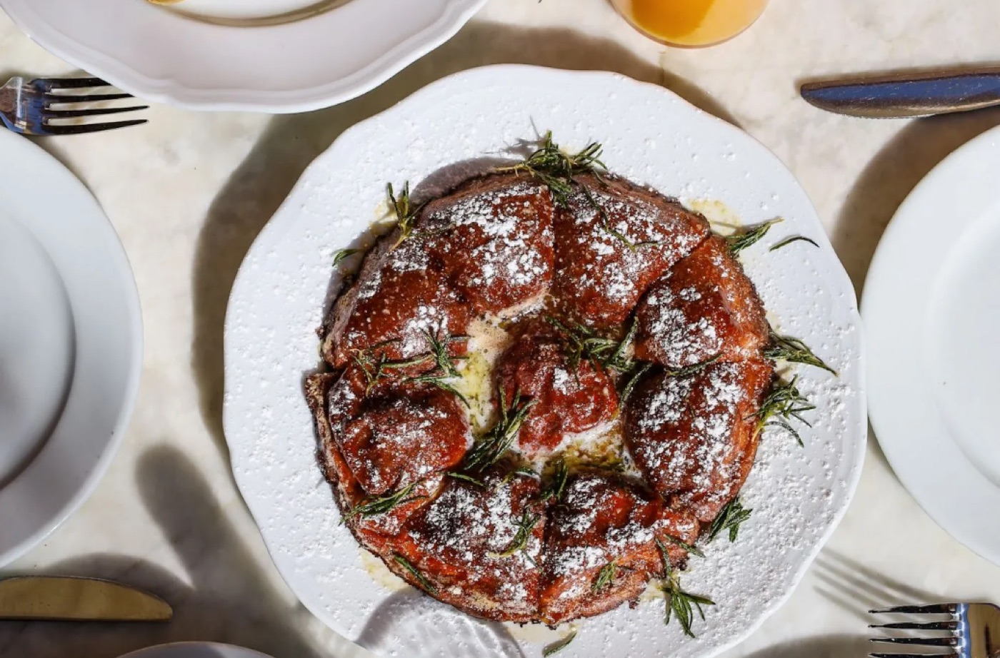
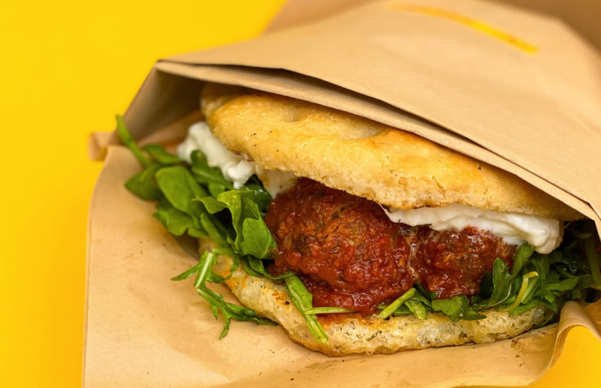
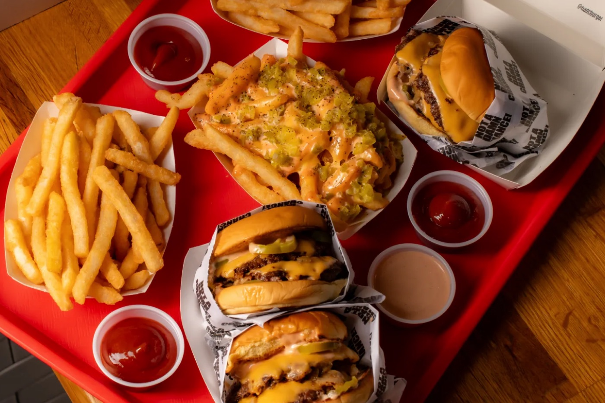
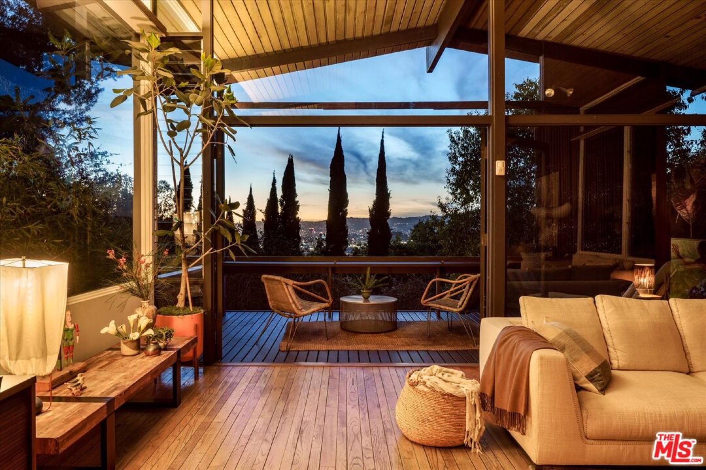
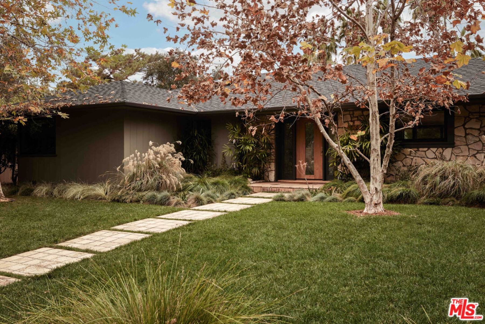
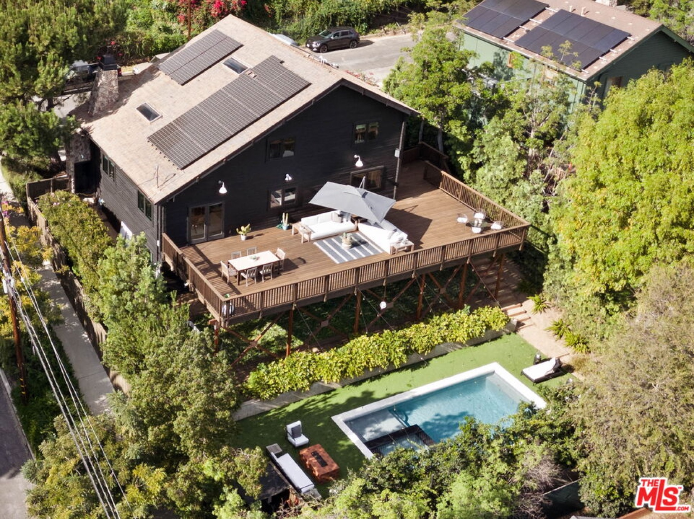
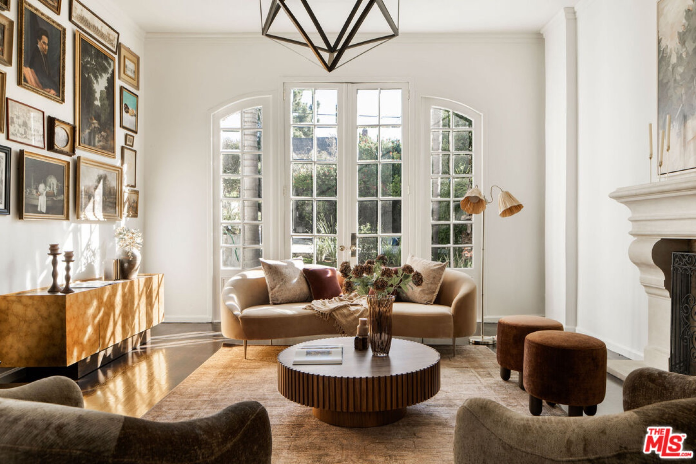
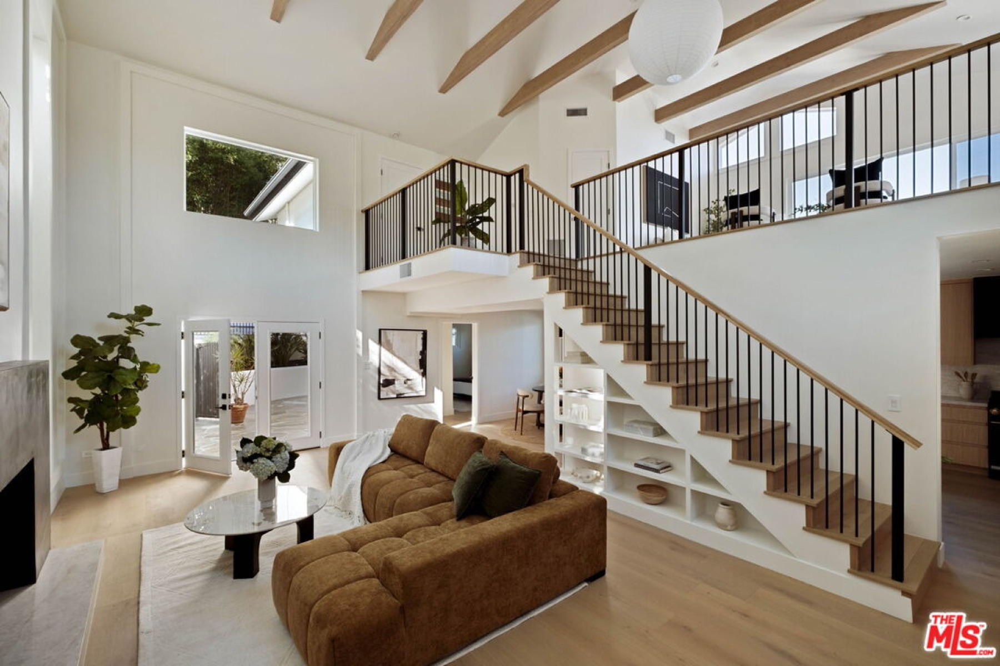
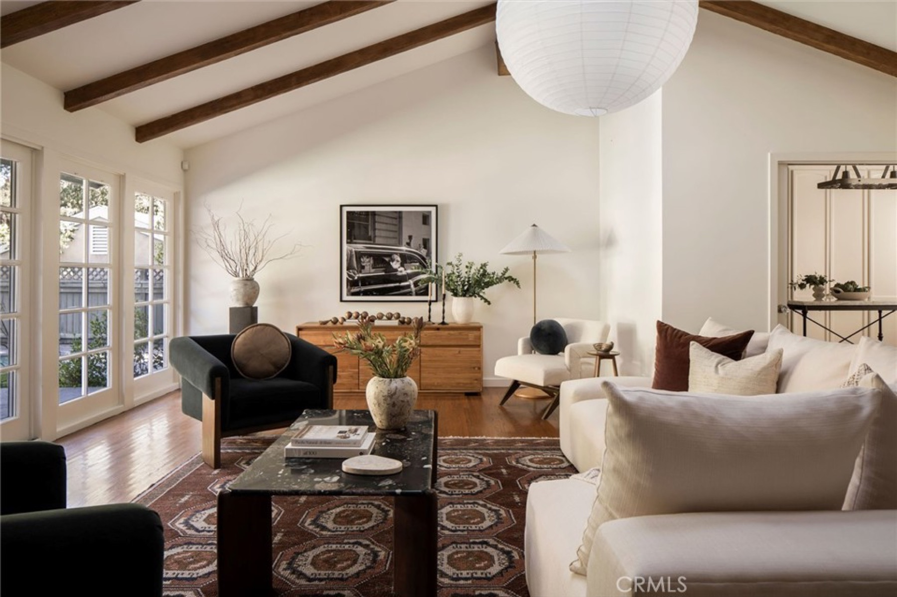
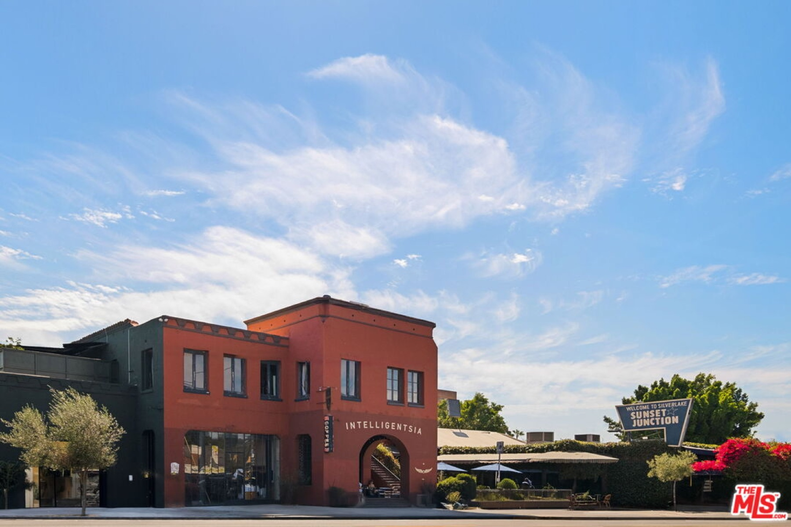

A Little March Note
The beginning of a monthly mix of LA real estate, local things around the city, and the occasional random fact my husband hears at 11pm.

Happy March!
The start of something new
March always feels like the start of something new—longer days, a little more sunshine, and yes, a touch of St. Patrick's Day luck. ☘️ I thought it would be a nice time to start sharing a short monthly note with the people in my community—a mix of LA real estate, a few local things around the city, and the occasional random fact my husband hears at 11pm on a Monday. Enjoy!
Did you know?
- Backyard homes (ADUs) are booming across Los Angeles. State and local laws now make it easier to build detached backyard units up to about 1,200 square feet, and they can often be rented long-term—which is why ADUs have become one of the most common ways homeowners create extra income in LA.
- The first St. Patrick's Day parade wasn't in Ireland—it was in St. Augustine, Florida in 1601. New York City's famous parade came later, starting in 1762.
- According to the United Nations World Urbanization Prospects 2025, Jakarta has overtaken Tokyo as the world's most populous urban area when the entire metropolitan region is counted: Greater Jakarta (Jabodetabek) about 42 million people, Dhaka about 40 million, and Tokyo metro about 33 million.
- The average LA homeowner stays in their house more than 20 years. That's one of the longest tenures in the entire country. A big reason is Proposition 13, which keeps property taxes low for longtime owners—making many people reluctant to move. (NY Post)
What’s happening in LA?



- With year-round weather that rarely dips below 60 degrees and minimal rain, Los Angeles remains the ideal city for brunch. On weekends, some of LA's best restaurants offer outstanding eggs Benedict, buttery pancakes, tomatoey shakshuka, and more.
- For good reason, Silver Lake has gained a reputation for being a dining destination in Los Angeles. From the busy stretch of Sunset Boulevard to the small, community-focused restaurants around the reservoir, the neighborhood punches well above its weight.
- Chef Phillip Frankland Lee and professional skateboarder Neen Williams opened their cult-favorite wagyu smash burger restaurant NADC Burger in Westwood Village after expanding the concept from Austin across the country.
More from the original issue: NADC’s Austin origin · New York · Chicago · wine bars · Thai restaurants · sandwiches
Featured listings







- Silver Lake — 1966 Lucile Ave, 90039. 3 BD · 2 BA · 1,872 SF · $2,748,888. The 1959 Fischer Residence by Eugene Weston III, a preserved post-and-beam home set on nearly half an acre.
- Southwest Pasadena — 775 San Rafael Ter, 91105. 4 BD · 4 BA · 3,060 SF · $4,500,000. A single-story mid-century residence on a peaceful cul-de-sac and rare 15,000-square-foot parcel.
- Echo Park — 2304 Vestal Ave, 90026. 4 BD · 3 BA · 2,676 SF · $2,665,000. A modern A-frame-inspired residence with soaring ceilings, warm materials, and multiple skylights.
- Sunset Strip–Hollywood Hills West — 1737 N Stanley Ave, 90046. 4 BD · 4 BA · 3,165 SF · $3,499,000. A rare quiet cul-de-sac near Runyon Canyon with old Hollywood glamour.
- Sherman Oaks — 4041 Davana Rd, 91423. 4 BD · 4 BA · 2,737 SF · $2,699,999. A fully renovated home with mid-century bones, vaulted ceilings, and rifted white oak cabinetry.
- Toluca Lake — 10225 Valley Spring Ln, 91602. 3 BD · 2 BA · 3,128 SF · $3,399,999. An oversized lot across from Lakeside Golf Club.
- Silver Lake — 3924 Sunset Boulevard. 3 BD · 3 BA · 14,139 SF · $25,500,000. An iconic Sunset Junction property with an apartment and eight retail spaces.
I’ve Got You
Originally sent in March 2026. Listings, prices, events, and other time-sensitive details reflect the issue’s original publication date and may have changed.